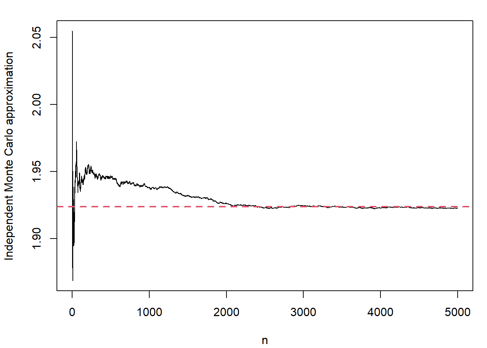

#### Independent Monte Carlo ####
## Data
n <- 20
sumy <- 40.4
sumysq <- 93.2
R <- 5e03
## Posterior
betan <- sumy / (n + 1)
an <- 2 + n / 2
bn <- 2 + 0.5 * (sumysq - ((sumy ^ 2)) / (n + 1))
## Independent Monte Carlo
set.seed(12345)
sigma.sq <- rep(NA, R)
beta <- rep(NA, R)
for(r in 1 : R){
sigma.sq[r] <- 1 / rgamma(n = 1, shape = an, rate = bn)
beta[r] <- rnorm(n = 1, mean = betan, sd = sqrt(sigma.sq[r] / (n + 1)))
}
## Plot the results
par(mar = c(4.1, 4.1, 1.5, 1))
plot(cumsum(beta) / (1 : R), type = "l", xlab = "n", ylab = "Independent Monte Carlo approximation")
abline(h = sumy / (n + 1), col = 2, lty = 2, lwd = 2)